.
โรงแรมที่โดดเด่นไปสถาปัตยกรรม อาคารสีขาว อลังการ White House Hotel - ไวท์ เฮ้าส์ โฮเทล ตั้งอยู่บนถนนพหลโยธิน ทำเลดี ติดถนนเส้นหลัก เดินทางสะดวก ไปไหนมาไหนง่าย พักระหว่างทางได้ บริการห้องพัก พร้อมอาหารเช้า ภายในห้องสีขาว สบายตา สะอาด ภายในสะดวกสบาย มีสิ่งอำนวยความสะดวกต่างๆ สระว่ายน้ำกลางแจ้ง แยกระหว่างผู้ใหญ่กับเด็ก รูมเซอร์วิส บริการซักแห้ง บริการรับฝากสัมภาระ จักรยานให้เช่า ที่จอดรถ และอื่น ๆ ราคาไม่แรง ไม่ถึงพันจ้าา
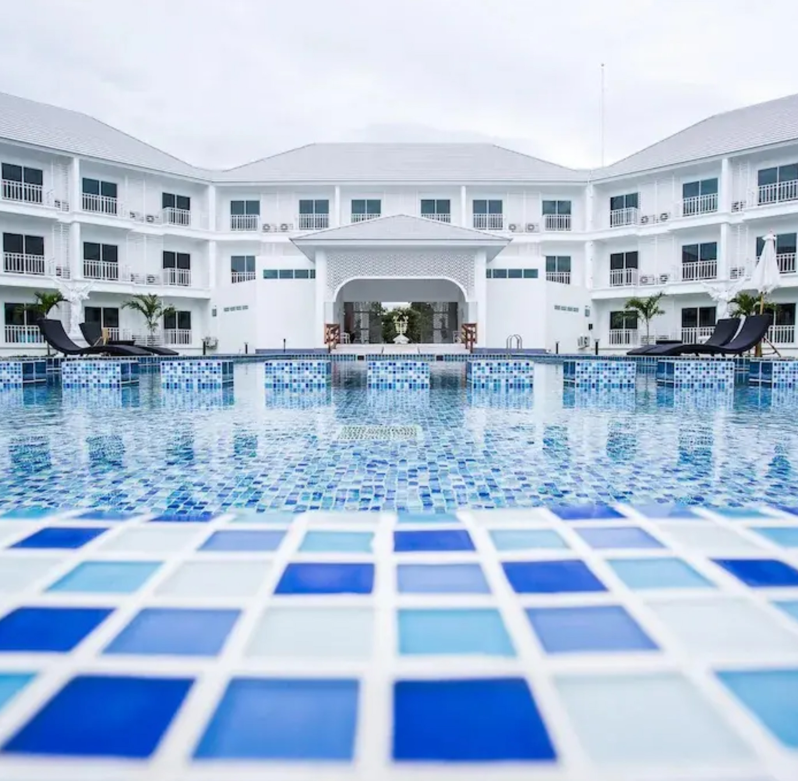 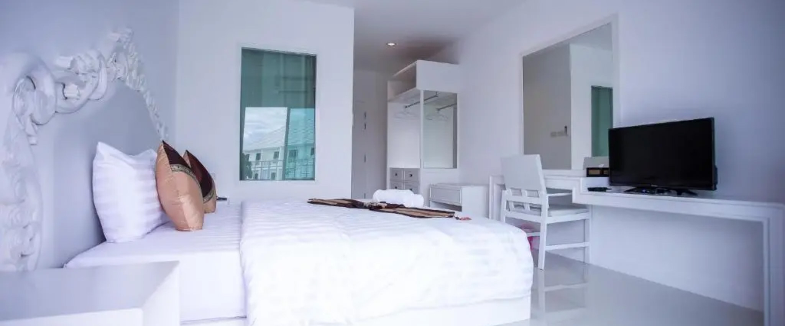 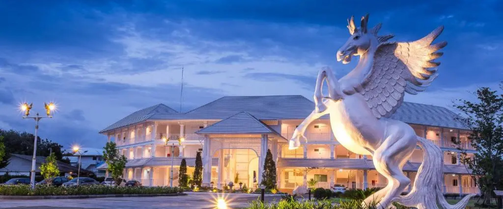ที่พักสไตล์นอร์ดิกแห่งแรกและแห่งเดียวในตัวเมืองตาก Phuping Valley Resort - ภูปิง วัลเลย์ รีสอร์ท ชวนคุณมาสัมผัสประสบการณ์การพักผ่อนในบรรยากาศสแกนดิเนเวีย กับการตกแต่งสุดอบอุ่นในโทนสีเอิร์ธโทน ดูเรียบหรู รายล้อมไปด้วยธรรมชาติสีเขียว ทั้งต้นไม้และลำธาร ให้บริการห้องพัก 2 ประเภท คือ ซูพีเรียและดีลักซ์การ์เดนวิว เข้าพักได้ 2 คน สิ่งอำนวยความสะดวกครบ รวมอาหารเช้าเป็นเซ็ต มีเวลคัมดริ๊ง ส่วนกลางมีสระว่ายน้ำกลางแจ้งและที่จอดรถ
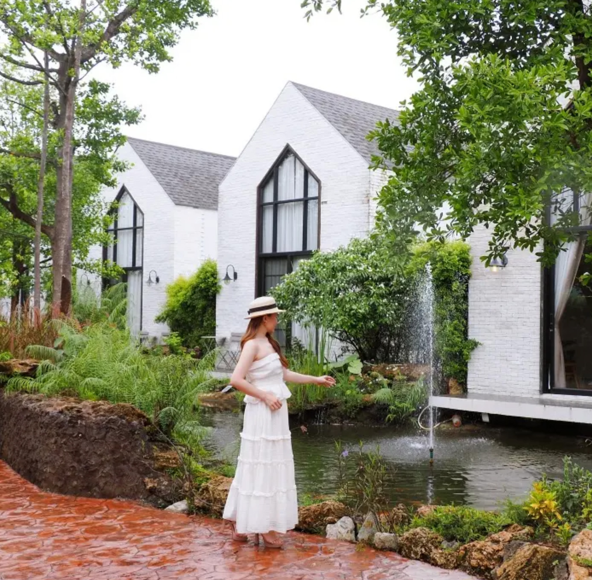 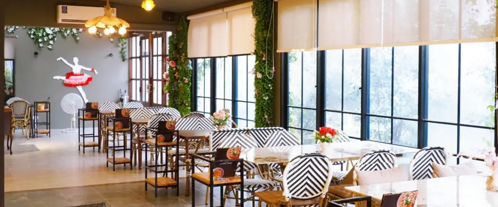 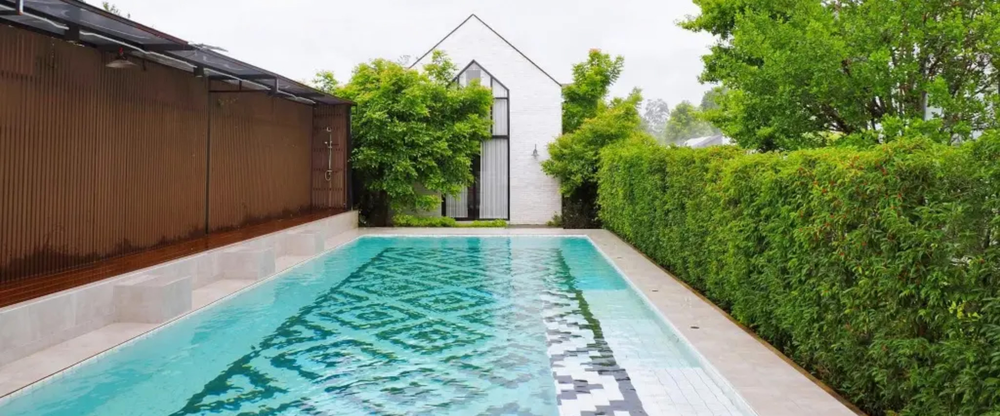โรงแรมกลางเมืองตาก Berich Hotel - บีริช โฮเทล บนถนนมหาดไทยบำรุง อยู่ใกล้สนามกีฬาตากสิน เดินทางสะดวก ไปยังสถานที่ต่าง ๆ ได้ง่าย ใกล้ ๆ มีร้านอาหาร หาของกินง่าย ให้คุณได้พักผ่อนแบบสบายๆ บริการห้องพัก พร้อมอาหารเช้า มีให้เลือกทั้งเตียงเดี่ยวและเตี่ยงคู่ ภายในตกแต่งเรียบง่าย ห้องสะอาด มีสิ่งอำนวยความสะดวกต่าง ๆ ห้องอาหาร ที่จอดรถ ผู้เข้าพักหลาย ๆ คน ประทับใจ สามารถเก็บไว้ในลิสต์ตัวเลือกของคุณได้นะ
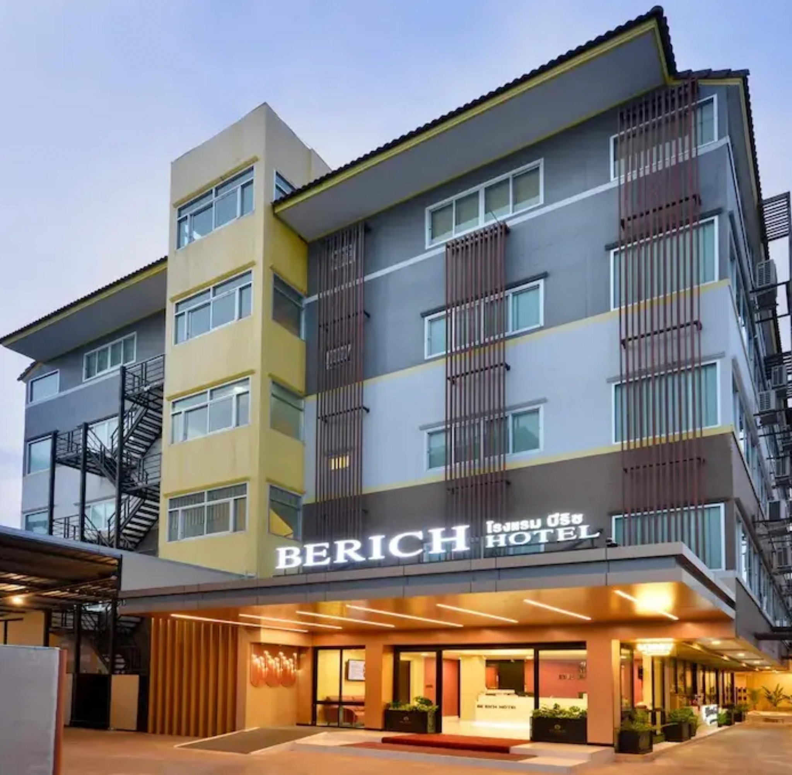 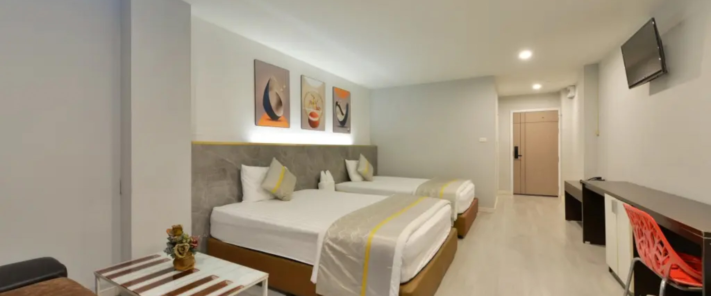 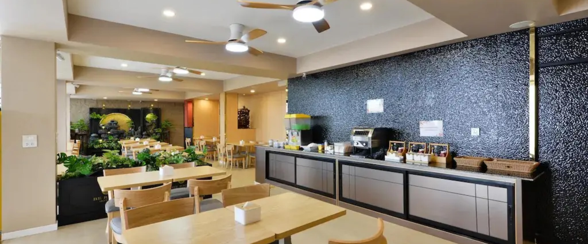Pingview Villa Resort - ปิงวิว วิลล่า รีสอร์ท ที่พักในรูปแบบวิลล่ารีสอร์ทริมน้ำปิง บรรยากาศสบาย ๆ ห้องพักสะอาด บริการบ้านพักเป็นหลัง แบ่งเป็น 4 โซน คือ A, B, C และ D ตกแต่งแตกต่างกันไป ในราคาเริ่มต้น 500 บาท/คืน ภายในมีสิ่งอำนวยความสะดวกครบ ไม่ว่าจะเป็นแอร์ ทีวี เครื่องทำน้ำอุ่น และตู้เย็น พักผ่อนแล้วท้องหิว แนะนำให้เดินมาที่ร้านอาหารปิงวิว บรรยากาศสุดชิลล์ ริมแม่น้ำปิง ทานอาหารอร่อยพร้อมชมวิวในตัว เสิร์ฟอาหารด้วยวัตถุดิบสด ๆ จากแม่น้ำ ทั้งปลาและกุ้ง ไปเที่ยวตากแวะไปลิ้มลองรสชาติกันได้
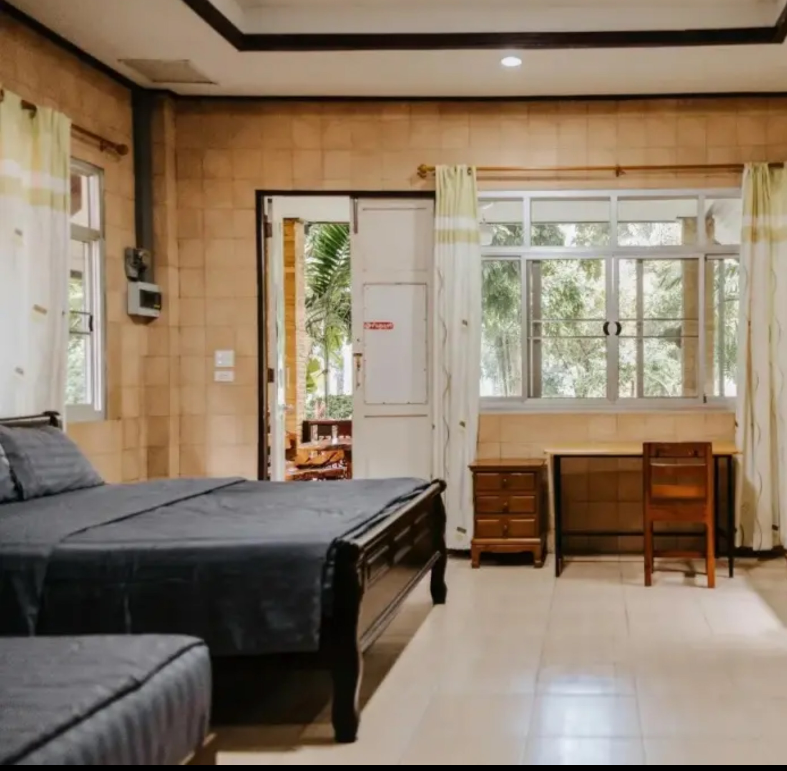 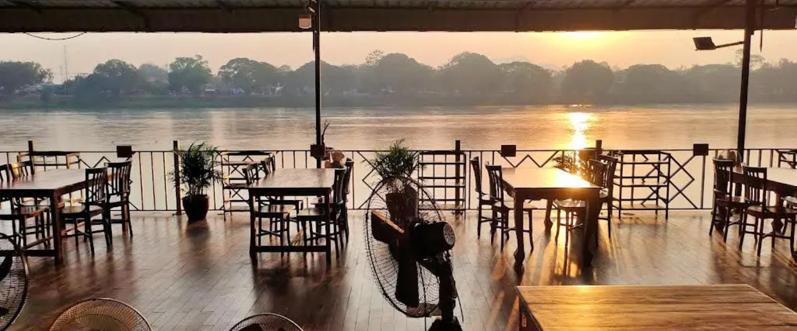 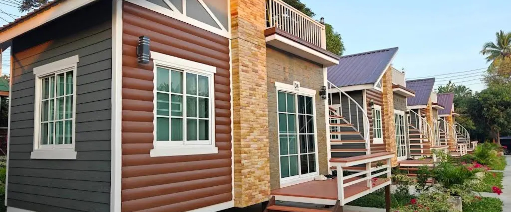